怎么上这堂课
这堂课把 xHCI 主机控制器拆成四台机器来看，全程挂着三方视角：软件驱动（内核源码里一行行的调用与位域组装）、xHC 控制器（主存里的环、TRB 与寄存器）、USB 设备（线上只认令牌、数据、握手包）。建议按顺序上：Fig1 看一颗 URB 怎么被装配成 TD 并敲铃，Fig2 看装它的那圈轨道（传输环）怎么生产消费，Fig3 看回执怎么回来（事件环），Fig4 看命令怎么下（命令环）。
全组的教学锚只有一句：环与 TRB 对设备不可见——三套环都是主机内存里的数据结构，设备从头到尾只知道 USB 包。每章先看可交互的机器（可步进、可巡游），再对照静帧与讲解；所有断言都能在各机的 EVIDENCE.md 里指回规范章节或内核源码行。
总装流水线：一颗 URB 的三工位之旅fig1-assembly
从 usb_submit_urb 到门铃按下：一颗控制读 URB 在文书台、总装机、终端灯箱三个工位上被拆解、冲压、发布。
提示：点按画面可给予键盘焦点（焦点态有描边），动画内的步进控件接受键盘操作。
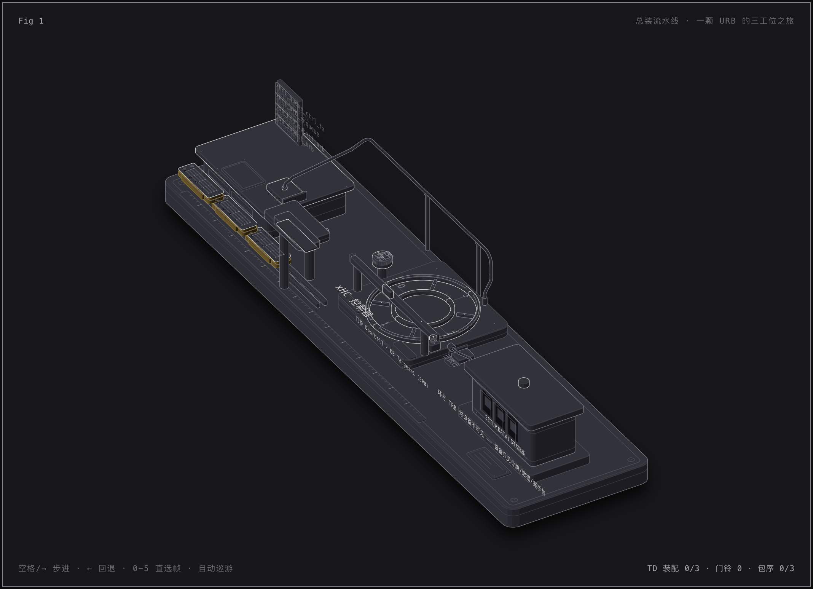
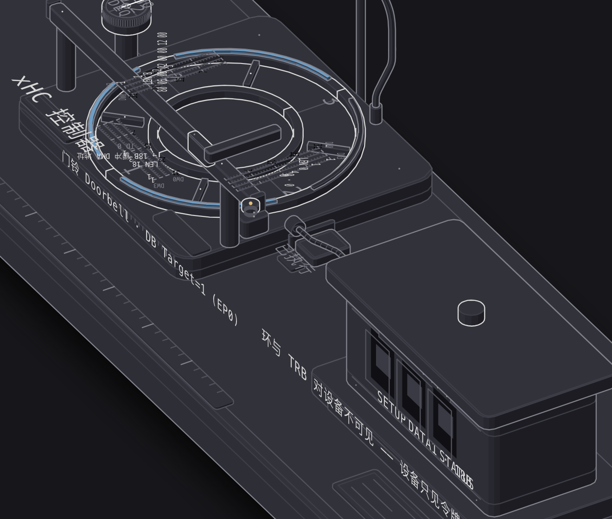
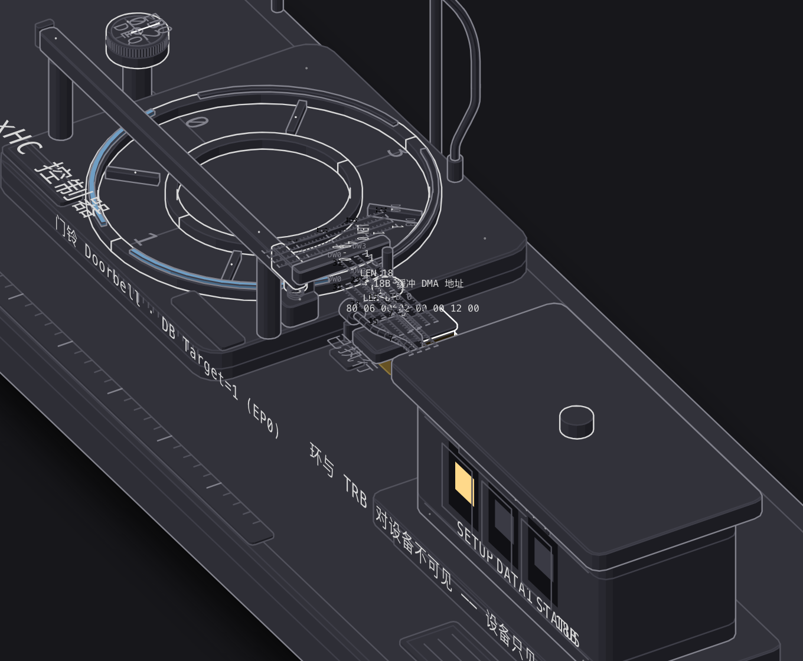
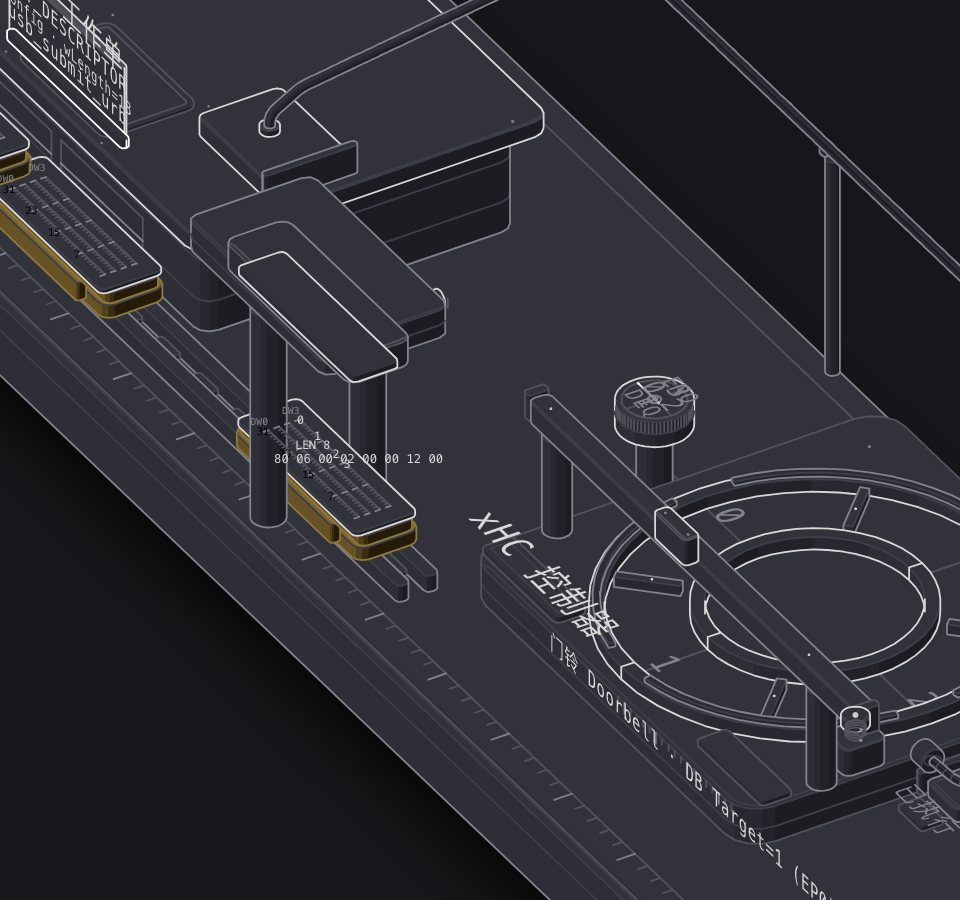
更多截图（dark/light 全景、逐帧特写、390px 手机宽）见 fig1-assembly/shots/（Pages 不提供目录列表，路径供仓库内浏览）。
演示样例是一颗控制读：GET_DESCRIPTOR(Config)、wLength=18——描述符比 wLength 长时只回前 18 字节（USB2 §9.4.3，读配置描述符的标准两段式首读）。文书台把 URB 拆成 3 个 Stage TD：Setup TD + Data TD + Status TD（xHCI 1.2b §6.4.1.2 @p429：控制传输恒需 2 或 3 个 TD）；每颗 Stage TD 又恒是单 TRB，所以本例共 3 颗 TRB——内核 xhci_queue_ctrl_tx 里就一行账：num_trbs = 2，wLength>0 再加 1（xhci-ring.c:3812–3820）。调用栈牌按实勘刻字：usb_submit_urb（drivers/usb/core/urb.c:375）→ usb_hcd_submit_urb（drivers/usb/core/hcd.c:1516）→ xhci_urb_enqueue（drivers/usb/host/xhci.c:1620）→ xhci_queue_ctrl_tx（drivers/usb/host/xhci-ring.c:3774），行号全部在 7.3.0-rc7 d9008e061539 树上 grep 勘定。
冲压台的三张位域卡值得逐格读。Setup TRB：Type=2（DW3[15:10]）、IDT=1——8 字节 setup 载荷（线上字节 80 06 00 02 00 00 12 00）直接内联进 DW0/DW1 参数域（Table 6-26 @p430）、Transfer Length 恒为 8、TRT=3（IN Data Stage，Table 6-26 @p431）。Data Stage TRB 是 Type=3 而非 Normal（Type=1），DIR=1（IN）、TX Length=18、TD Size=0，且 IOC=0——规范 Note 明说 IOC 只该出现在控制传输的 Status Stage TRB 上（§6.4.1.2 Note @p429）。Status TRB：Type=4、DIR=0（OUT，控制读的状态段方向翻转）、IOC=1。顺带一条对照：IDT 不是 Setup 专属——Normal TRB 同样允许 IDT（内核对 ≤8 字节的小包也走内联，xhci_urb_suitable_for_idt，xhci.h:2027–2038）。
三颗夹具入环后，门铃按下：DB Target=1（EP0）。注意双语义：Table 5-43 @p395 里 0 是设备门铃的保留值，但 Doorbell 0 这个寄存器整体专用于命令环——「命令环敲 0」与「EP0 敲 1」并存，第四机会把这两个 0/1 分开刻。灯箱上设备视角只有三盏灯：SETUP（DATA0，8 字节）→ DATA1（18 字节短包）→ 状态段（主机 OUT 零长 DATA1、设备 ACK，USB2 Table 8-7）。控制读数据段首包是 DATA1 不是 DATA0（USB2 §8.6.1：SETUP 事务结束时双方序列位同为 1）。而灯箱底的铭牌就是全组教学锚：环与 TRB 对设备不可见——设备只见令牌、数据、握手包。
环形分度轨道：传输环的生产与消费fig2-transfer-ring
第一机里装着 URB 的那圈轨道单独上钟表匠的分度台：软件只管往里压，xHC 只管往前吃，Cycle 色带分辨空与满。
提示：点按画面可给予键盘焦点（焦点态有描边），动画内的步进控件接受键盘操作。
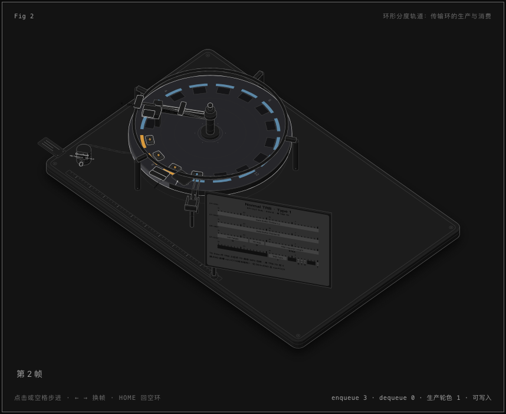
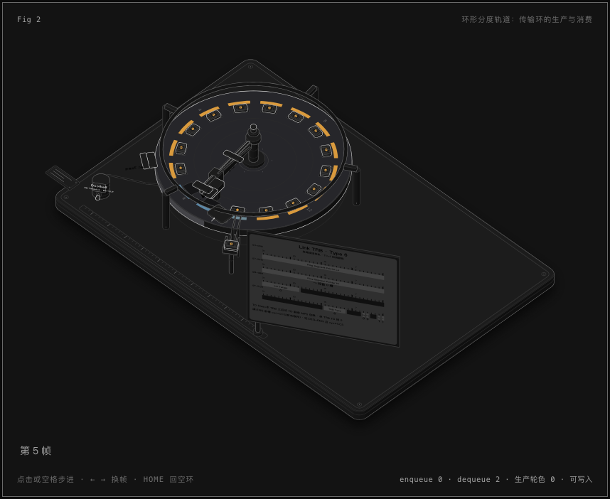
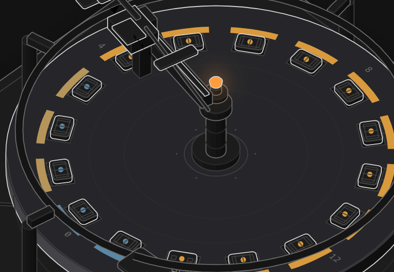
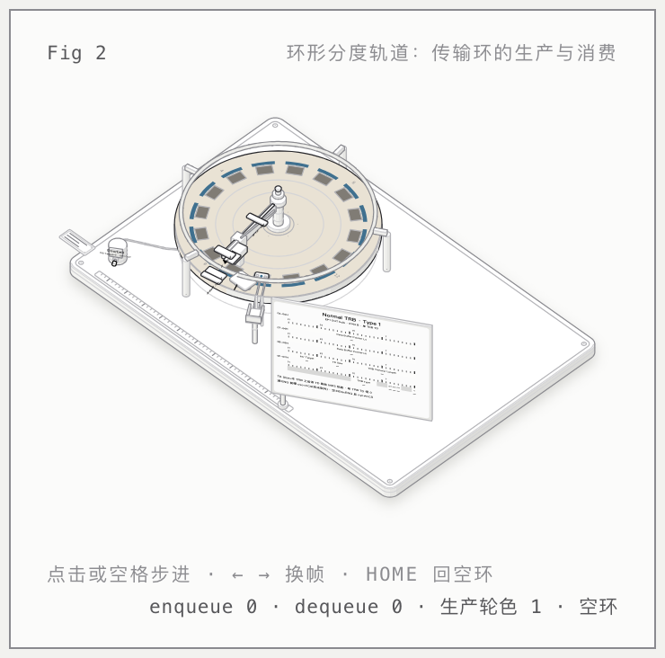
更多截图（dark/light 逐帧、门铃与位域卡特写、390px 手机宽）见 fig2-transfer-ring/shots/（Pages 不提供目录列表，路径供仓库内浏览）。
传输环是一段首尾相接的环形段，所有权方向就刻在两块铭牌上：软件·生产者握 enqueue 指针写入，xHC·消费者握 dequeue 指针取走——两端指针都是各自的私有副本（§4.9.2 @p152-153）。Cycle 规则四条全部出自 §4.9.2.2 @p156-157：环初始化时软件把段内全部 TRB 的 Cycle 位清 0，PCS 与 CCS 都置 1；生产者每写一颗 TRB 就以当前 PCS 值写它的 Cycle 位并推进 enqueue；消费者对 Cycle 位只读，只执行 Cycle 位等于 CCS 的那颗。
段末恒是一颗 Link TRB（Type=6、TC=1，§4.9.2.1 @p155「段末恒为 Link TRB」）：生产者的 enqueue 跨过它时，先把 Link 自身的 Cycle 写成当前 PCS，TC=1 命中则把 PCS 翻转，指针跳回段首——新一轮生产色与前一轮相反（§4.9.2.2 @p158）；消费者过 Link 时对称地翻 CCS。空与满不是看色相：空 = dequeue 追平 enqueue 且槽内 Cycle ≠ CCS；满 = enqueue 再前进一步就会撞上 dequeue（前槽 Cycle=CCS，还有未取件；§4.9.2 @p153 / §4.9.2.2 @p156）。满由软件把关——§4.9.2：为防 overrun，软件必须自己判断环满，等 Transfer Events 把 dequeue 推进后再继续。
演示样例：同一 bulk OUT 端点（EP1 OUT）连投 3 个 6 KiB（6144 B）URB → 3 个 TD，每 TD 单颗 Normal TRB（Type=1、TX Length=6144、TD Size=0——单 TRB TD 的末颗恒 0（§4.11.2.4 @p197-198）——、IOC=1：每 TD 恰一颗收尾事件）；门铃 DB Target=2（EP1 OUT，Table 5-43）。还有一个容易被画错的细节：消费者取走托盘后并不擦槽——Cycle 位对消费者只读，槽内旧值原样残留，等生产者回绕后覆写失效；「已消费」由 dequeue 指针的位置表达，不由色带表达。
回执登记机：事件环的生产与消费fig3-event-ring
同一套环物理，指针换边：xHC 盖章投递回执，软件开窗取件签收——ERDP 这根指针反过来握在软件手里。
提示：点按画面可给予键盘焦点（焦点态有描边），动画内的步进控件接受键盘操作。
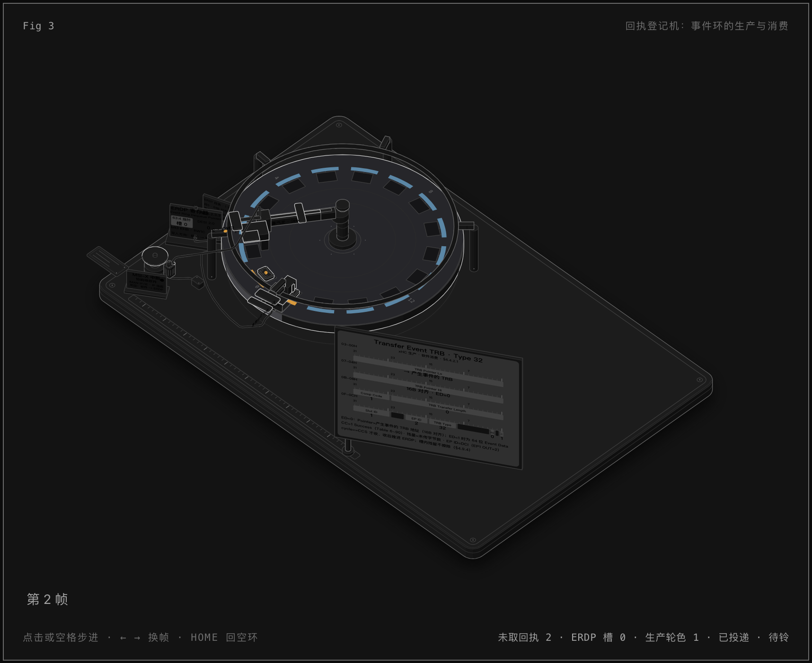
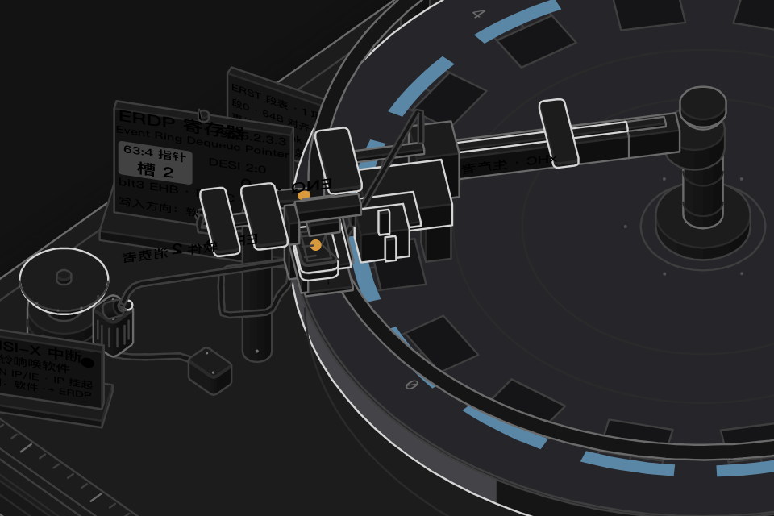
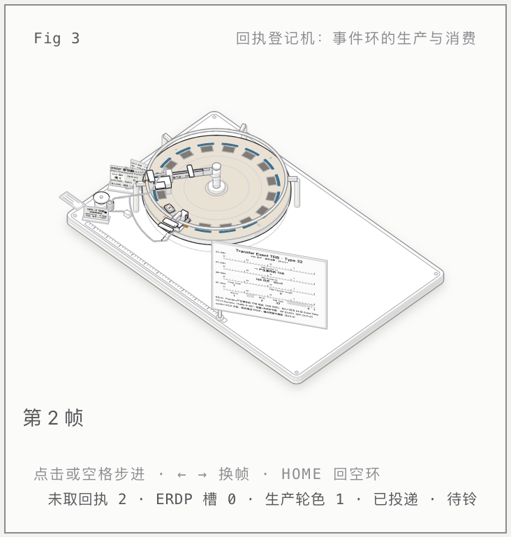
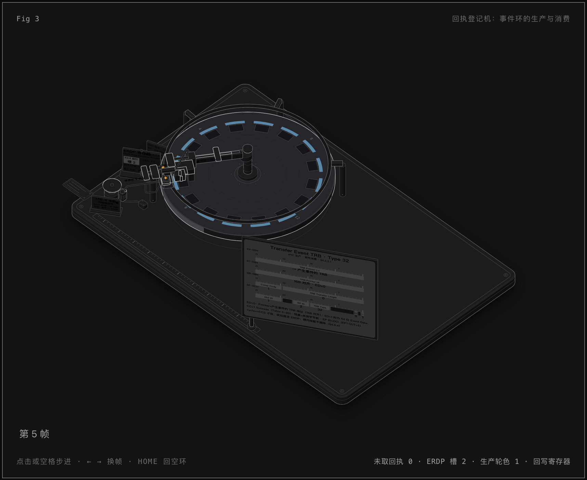
更多截图（dark/light 全景、回执卡与寄存器面板特写、390px 手机宽）见 fig3-event-ring/shots/（Pages 不提供目录列表，路径供仓库内浏览）。
事件环把所有权整个反过来：生产者是 xHC（盖章投递头握 ENQ），消费者是软件（取件窗口，手里拨着 ERDP 牌）——§4.9.4 @p161 一句话：xHC is the producer and system software is the consumer of Event TRBs。回执卡就是 Transfer Event TRB：Type=32（DW3[15:10]）、Completion Code=1（Success，DW2[31:24]，完成码表=Table 6-90 @p465）、EP ID=2（EP1 OUT 的 Device Context Index）、Slot ID=1（演示取首个分配槽的示例值）、Cycle=1（=生产轮色）。投递的触发源是传输侧那颗带 IOC 的收尾 TRB：完成即产事件（§4.11.3.1 @p201）。
投递动作连着一只电磁铃：IMAN.IP 置 1 → 发 MSI-X 中断唤软件（Interrupter 与 MSI-X 向量一一对应，§5.5.2 @p389）。软件收铃后逐张收卡：事件的 Cycle 位等于软件手里的 CCS 才收，收一张推一格 ERDP（§4.9.4 @p161）。然后是全环最反直觉的一笔——签收回写：软件把 ERDP 写回寄存器面板（63:4 指针 + DESI 段号，单段恒 0），顺带清 EHB 位——EHB=bit3，RW1C（§5.5.2.3.3 Table 5-42 @p393-394：IP 置 1 时 EHB 升起、软件写 ERDP 时清 0）。箭头方向是软件→寄存器，与传输环正好相反。
三个收尾细节。其一，事件环没有 Link TRB——段切换由 ERST（Event Ring Segment Table）表项驱动，回绕翻色直接靠 CCS 翻转（§6.5 @p473、§4.9.4 @p161-162）。其二，与传输环同理，消费不擦除：收走的回执槽残留旧 Cycle 色，「已取」由 ERDP 位置表达，不由色带表达。其三，「整条事件链在同一 hardirq 跑完」这句话不能说——xHCI 驱动注册了 HCD_BH 标志（xhci.c:5608-5611），URB 完成回调被排入下半部工作队列（usb_hcd_giveback_urb，hcd.c:1719-1763），中断里只做事件解析与指针推进。
订单柜台：命令环与它的回执fig4-command-ring
小柜台、真流程：三条命令逐单投递、逐单办结，办结回执走第三机的登记机，账本（设备上下文）挂进 DCBAA。
提示：点按画面可给予键盘焦点（焦点态有描边），动画内的步进控件接受键盘操作。
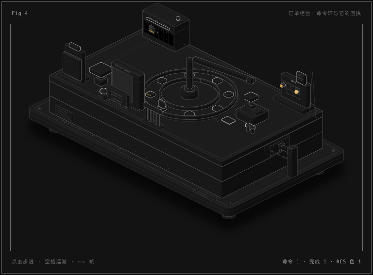
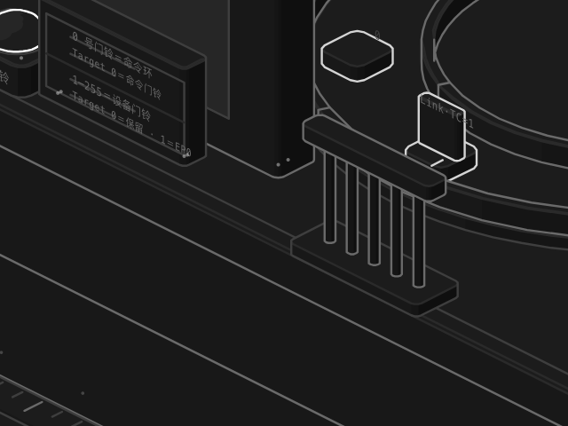
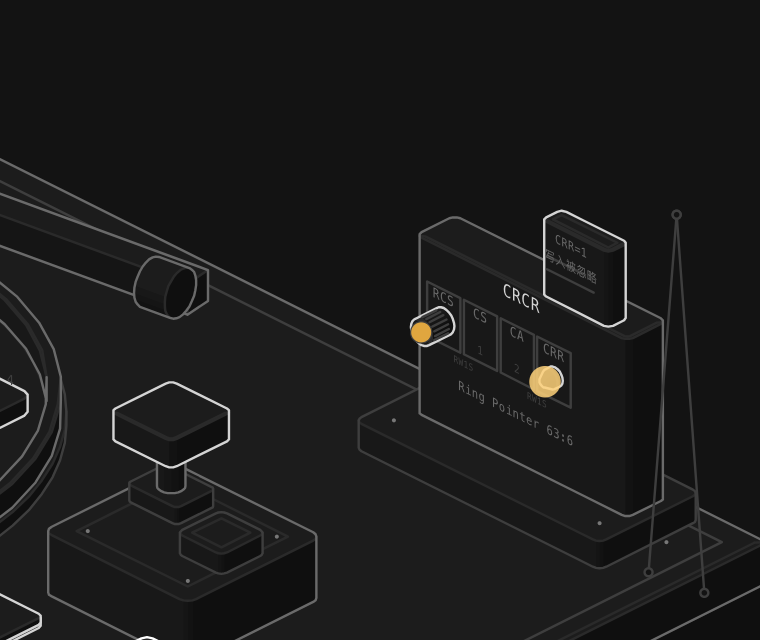
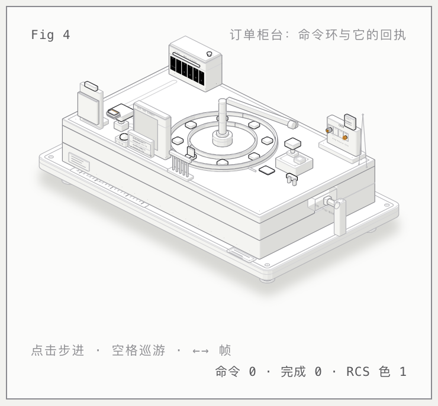
更多截图（dark/light 全景、CRCR/DCBAA/申请单夹特写、390px 手机宽）见 fig4-command-ring/shots/（Pages 不提供目录列表，路径供仓库内浏览）。
命令环是缩小版柜台（演示 8 槽；真实段 256 TRB，xhci.h:1265），但 CRCR 铭牌一个位都没含糊：RCS=bit0（RW，翻色旋钮，随生产轮翻转）、CS=bit1、CA=bit2（RW1S）、CRR=bit3（RO，运行灯）（Table 5-24，§5.4.5 @p366-367）。锁牌刻的避雷句是：CRR=1 时对 CRCR 的写入被忽略（§5.4.5 @p366——是「运行中忽略」，不是什么 RsvdP 防写）。CRR 灯在整个演示期常亮：环办完全部命令也不会清 CRR（§4.9.3 Note @p161）。7 号槽照例恒为 Link TRB（TC=1）。
门铃在这里把两个 0/1 语义分开刻：0 号门铃整个寄存器专用于命令环（Target 0＝命令门铃，合法）；1–255 号是设备门铃（Target 0＝保留、1＝EP0）（Table 5-43，§5.6 @p394-395）。三条命令逐单等回执再推进（§4.3.2 @p75）：Enable Slot（Type=9）→ Address Device（Type=11，BSR=0 时 xHC 生成 USB SET_ADDRESS，§6.4.3.4 @p450）→ Configure Endpoint（Type=12）。申请单夹（Input Context）三格——输入控制上下文、槽上下文、EP 上下文（§6.2.5 Figure 6-5 @p421-422）——Address Device 点亮 A0/A1，Configure Endpoint 点亮 A2/A3（EP1 OUT/IN 的上下文对）。顺带一提：xHCI 1.2b 没有「Initialize Endpoint」这条命令——端点上下文是经 Address Device / Configure Endpoint 投递的。
办结回执 = Command Completion Event（Type=33、CC=1 Success、Slot ID=1——演示取首个分配槽的示例值，具体数值由 xHC 实现决定），它不走命令环自己回家：Primary Event Ring 0 接收全部命令完成事件（§6.4.2.2 Note @p440）——也就是第三机那台登记机。柜台后的编号储物柜 DCBAA：0 号格留给 Scratchpad（§3.2.1 Note @p48），1 号格的「设备上下文地址」牌由软件侧挂入（§3.2.1 @p48：system software inserts a pointer to the newly created Device Context…；§4.3.3 step10 @p76：软件装载 DCBAA 表项后才发 Address Device），xHC 只读该柜——柜员不动账本。未分配格保持 0（§6.1 @p404）。
三环对照
三套环同一套物理（环形段 + Cycle 色 + 双指针），差在生产者/消费者站哪边、可写指针在谁手里、回执走哪条路。
| 环 | 生产者 | 消费者 | 谁握可写指针 | 回执与方向 | 门铃 Target |
|---|---|---|---|---|---|
| 传输环 | 软件：冲压 TRB 入环（推 ENQ） | xHC：取件执行（推 DEQ） | ENQ=软件私有副本；DEQ=xHC 私有副本（§4.9.2） | 带 IOC 的收尾 TRB 完成 → Transfer Event 入事件环（xHC → 软件） | 设备门铃 1–255：EP0=1、EP1 OUT=2（Target 0＝保留，Table 5-43） |
| 事件环 | xHC：投递 Event TRB（推 ENQ） | 软件：比对 CCS 收卡（推 ERDP） | ENQ=xHC；ERDP=软件，且要写回寄存器（唯一由软件写回的推进指针，§4.9.4） | 回执即环内容；通知走 MSI-X 中断（IMAN.IP 置 1 唤软件） | 无门铃——中断唤软件 |
| 命令环 | 软件：投递命令 TRB（推 ENQ） | xHC：取件办结（推 DEQ） | ENQ=软件；DEQ=xHC（§4.9.3） | Command Completion Event → Primary Event Ring 0（回到事件环，§6.4.2.2 Note） | Doorbell 0 专用：0＝命令门铃（合法的 0，与设备门铃 Target 0＝保留分刻） |